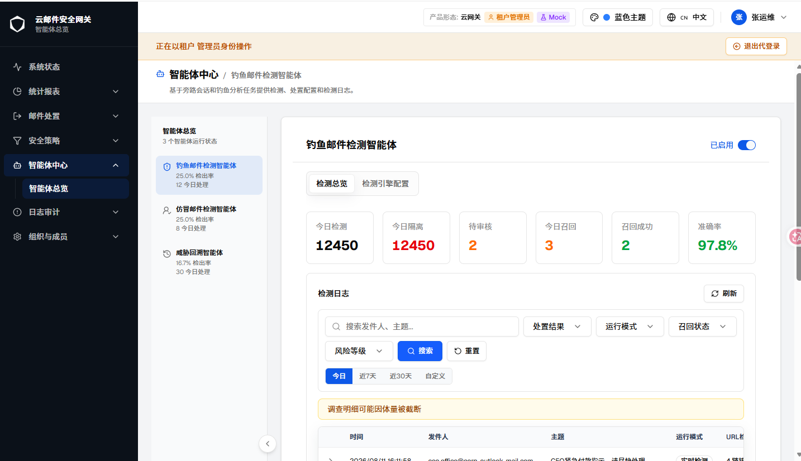
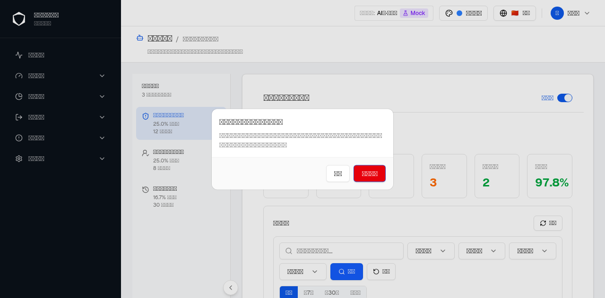
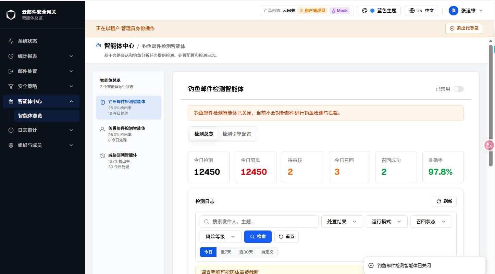
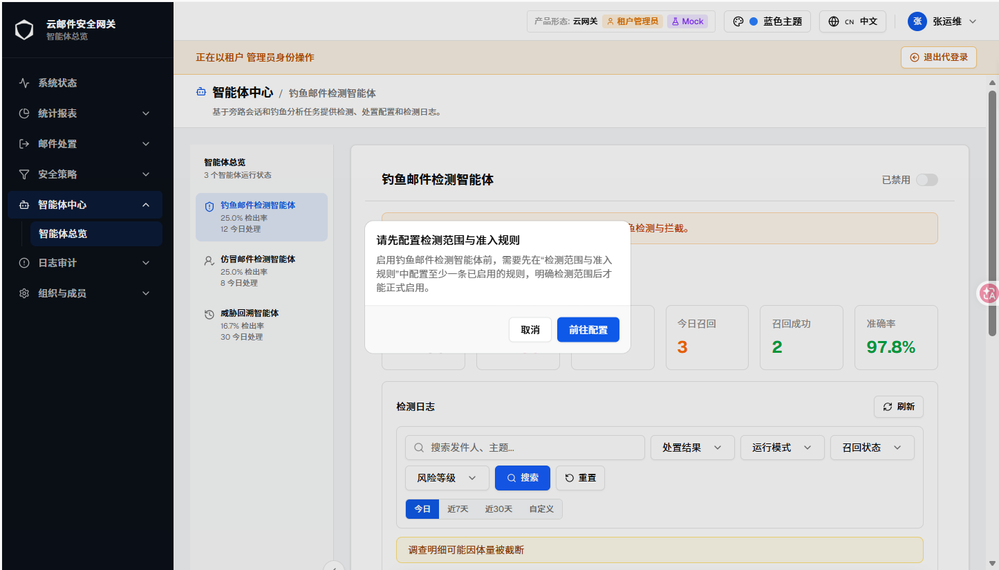
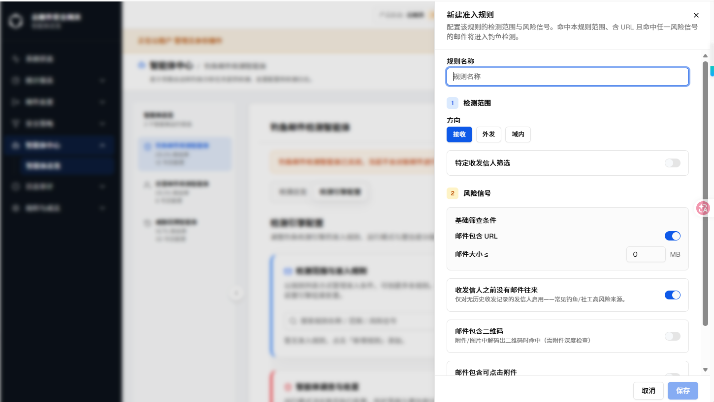
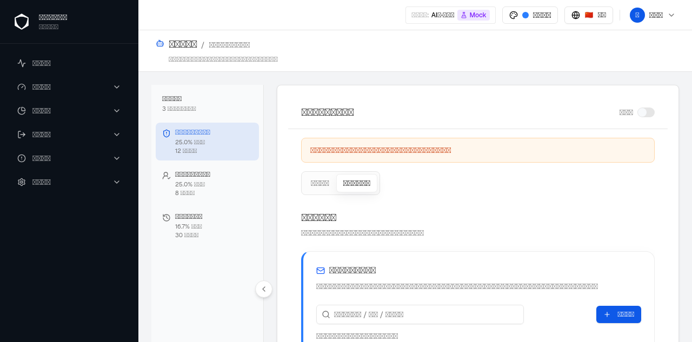

| 字段 | 内容 |
|---|---|
| 文档编号（文件 ticket） | GT-12865 |
| 需求名称 | GT-12514 钓鱼邮件检测智能体-缺少智能体总开关及关闭生命周期交互（本文档同时收录 GT-12922 钓鱼邮件检测智能体模块优化，详见下方独立元信息区块） |
| 规格类型 | 增量规格（Incremental）· 新增交互能力（总开关 + 生命周期二次确认 + 前置校验联动） |
| 当前版本 | v3 |
| 生成日期 | 2026-08-11 |
| 路由路径 | /zh/agent-center/overview?agent=phishing（智能体中心 → 钓鱼邮件检测智能体详情页，顶部操作栏） |
| 组件路径 |
src/components/phishing-detection/agent-management-page.tsx（usePhishingEngineToggle / PhishingAgentHeaderActions / PhishingAgentPanel）、
src/components/phishing-detection/config/admission-rules-section.tsx（消费 action=create-admission-rule 自动打开新增规则）、
src/components/agent-center/agent-center-overview-page.tsx（挂载点）
|
| webapp commit | working-tree（沿用本目录其他文档的既有约定，标记为当前工作区变更） |
| 对照 spec commit | not-used |
| 历史对话记录 | 当前上下文可获得部分历史（i18n 乱码修复与核心功能实现过程），未提供本需求最初的完整讨论记录；本文档以用户最新描述 + webapp 当前源码与浏览器实测为事实源 |
| 事实源优先级 | 1. 用户当前描述（GT-12514 需求名称）；2. webapp 当前运行态（agent-browser 实测）与源码；3. 其他原始 spec，仅作差异对照（当前无可用对照 spec） |
| 浏览器验证状态 | 已通过 agent-browser 在 Mock 模式（AI版·单租户·平台管理员·浅色主题·1280×633）下逐状态实测：默认启用态、关闭二次确认、关闭后禁用横幅、重新开启时的准入规则门禁拦截、点击「前往配置」后直达新增规则弹窗、取消门禁后返回配置 Tab。见 §1.2 / §2.2 / §3.2 截图。 |
| 沙箱渲染限制 | S-1、S-3、S-4、S-5 为真实浏览器实拍（中文正常渲染）；S-2、S-6 两张截图仍来自无头浏览器沙箱，该沙箱缺少中文字体，导致截图中的中文文字统一渲染为方框（tofu box）占位符，而非实际字形缺失或产品文案异常。这是渲染环境限制，不是产品缺陷。S-2、S-6 各交互预览下方的表格与说明文字均依据 messages/zh.json 中的真实 i18n 文案与源码逐一核对后如实转录，读者可结合截图中的布局位置与文字表格对照理解实际效果。已在 D-004 中记录该限制，避免被误认为文案渲染缺陷。 |
| 变更类型 | 新增功能（总开关 UI + 生命周期确认交互 + 前置校验联动跳转） |
run_mode（实时检测 / 观察模式）间接影响是否处置，缺少一个可以整体启用/禁用该智能体、且带有生命周期确认的总开关。本次新增：①详情页顶部操作栏的总开关（变更 1）；②关闭时的二次确认与关闭后的持续性禁用横幅（变更 2）；③重新开启前的准入规则前置校验，以及门禁弹窗「前往配置」按钮与「检测范围与准入规则」新增规则弹窗之间的直达联动（变更 3）。
engine.enabled）与「检测引擎配置」内部的 run_mode（实时检测 / 观察模式）是两个独立维度——run_mode 只在总开关开启时才有实际意义；本次未改动 run_mode 本身的行为。总开关数据源复用既有的 /phishing-agent/engine-config 接口（GET / PUT），未新增后端接口；query key 与「检测引擎配置」页内既有的 phish-engine-config / phish-admission-rules 保持一致，避免重复请求。
总开关渲染条件为 selectedAgent === 'phishing' && !detailLocked（源码 agent-center-overview-page.tsx），不依赖 detailPresentation?.canConfigure——即只要该智能体详情页未被锁定（未订阅 / 无查看权限），总开关即会渲染，不因当前角色是否具备「检测引擎配置」编辑权限而隐藏或置灰。该行为已记录在 D-001，其合理性需与产品确认（见 Q-001）。本次全部截图均在 AI版·单租户 / 平台管理员下实拍，其余形态 / 角色未逐一验证。
| 功能 / 元素 | 变更 | AI-单 平台管理员 |
传统-单 平台管理员 |
云-多 平台管理员 |
云-多 租户管理员 |
AI-多 平台管理员 |
AI-多 租户管理员 |
传统-多 平台管理员 |
传统-多 租户管理员 |
|---|---|---|---|---|---|---|---|---|---|
| 智能体总开关（状态文字 + Switch） | #1 | ✅ | ? | ? | ? | ? | ? | ? | ? |
| 关闭二次确认弹窗 / 禁用横幅 | #2 | ✅ | ? | ? | ? | ? | ? | ? | ? |
| 准入规则门禁弹窗 + 直达新增规则 | #3 | ✅ | ? | ? | ? | ? | ? | ? | ? |
? 标记项：其余产品形态与租户管理员角色下，总开关及其生命周期交互的可见性、以及是否存在与「检测引擎配置」编辑权限的联动，均未验证，列入待确认 Q-001。
问题背景：此前钓鱼邮件检测智能体没有一个可以整体启用/禁用的入口——「检测引擎配置」Tab 内的 run_mode（实时检测 / 观察模式）只能切换处置方式，无法让智能体完全停止运行；管理员若想临时下线该智能体（例如排查误报、维护准入规则期间避免误拦截），没有对应的操作路径。
方案：在钓鱼邮件检测智能体详情页顶部操作栏（标题「钓鱼邮件检测智能体」同一行右侧）新增一枚状态文字 + Switch 组合的总开关：文字随状态在「已启用」（主题色）与「已禁用」（灰色）之间切换，Switch 的选中态直接映射 engine.enabled 字段。开关复用既有的 /phishing-agent/engine-config 接口读取与保存状态，不新增后端字段或接口；usePhishingEngineToggle 内部通过 useQuery（queryKey: ['phish-engine-config']）与「检测引擎配置」页共享缓存，切换后 invalidateQueries 让两处状态保持同步。开关在数据加载中、保存中或准入规则校验中（见变更 3）均处于 disabled 态，避免中间态下的重复点击。
触发路径：/zh/agent-center/overview?agent=phishing → 智能体中心选中「钓鱼邮件检测智能体」卡片 → 进入详情页，直接可见 · 真实浏览器实拍（Mock · AI版·单租户 · 平台管理员 · 浅色主题 · 1434×826）

Switch（蓝色滑块）；下方 Tabs 展示「检测总览」（当前选中）与「检测引擎配置」两个 Tab，均可正常点击切换，不受总开关状态影响；「检测总览」内容区正常展示今日检测/今日隔离/待审核/今日召回/召回成功/准确率统计卡片与检测日志列表，未见任何禁用横幅。| 元素 | 类型 | 文案 / 状态 | 说明 |
|---|---|---|---|
| 状态文字 | 只读文本（span） |
启用：「已启用」（text-primary）；禁用：「已禁用」（text-muted-foreground） |
复用 common.enabled / common.disabled i18n key，随 engine.enabled 实时切换文字与颜色 |
| 总开关 Switch | 开关控件 | checked = engine.enabled；data-testid="phishing-agent-master-switch" |
数据加载中（isLoading）、保存中（isPending）或准入规则校验中（admissionCheckPending，见变更 3）时禁用；点击不直接切换，先经过 handleCheckedChange 分支判断（见变更 2/3） |
| 检测总览 / 检测引擎配置 Tab | Tabs |
两个 Tab 始终可见，不受总开关状态影响 | [Base]Tab 的显示与否由既有的 configurationEnabled（角色可配置权限）控制，与本次总开关新增逻辑无关，二者是两个独立维度 |
问题背景：关闭整个检测智能体是影响面较大的操作——关闭后新到达的邮件不再进行钓鱼检测与拦截，若管理员误触总开关，可能造成一段时间内钓鱼邮件无人拦截却未察觉。此前没有开关级别的确认机制，也没有持续性的「当前已关闭」提示。
方案：点击总开关由「开」→「关」时，handleCheckedChange 拦截默认切换行为，先弹出 variant="destructive" 的二次确认弹窗（标题「确认关闭钓鱼邮件检测智能体？」），说明关闭后的影响范围（新邮件不再检测、历史研判记录仍可查看），用户点击「确认关闭」后才真正调用 PUT /phishing-agent/engine-config 保存 enabled: false；保存成功后弹窗关闭并 toast.success 提示「钓鱼邮件检测智能体已关闭」，保存失败则保留弹窗在原地重试并 toast.error 提示，不静默关闭弹窗误导用户操作已生效。关闭生效后，PhishingAgentPanel（检测总览 / 检测引擎配置 Tab 的容器）顶部会持续展示一条橙色警示横幅，直到重新开启为止，避免管理员在后续多次进入该页面时忽略当前的禁用状态。
触发路径：S-1 默认启用态 → 点击总开关 Switch（当前为「开」）→ 弹出确认弹窗 · agent-browser 实拍（Mock · 浅色主题 · 1280×633）

destructive）按钮。（沙箱中文字体缺失导致文字显示为方框，文案已按 messages/zh.json 的 phishingDetection.toggle.disableConfirmTitle/Description/Action 原文核对转录，见下方 2.3 逐元素说明表。）触发路径：S-2 点击「确认关闭」→ mutation 成功 → 弹窗关闭 → 页面稳态 · 真实浏览器实拍（Mock · AI版·单租户 · 平台管理员 · 浅色主题 · 1445×800）

Switch 呈未选中态（灰色滑块）；Tab 内容区（PhishingAgentPanel）顶部新增橙色警示横幅，文案「钓鱼邮件检测智能体已关闭，当前不会对新邮件进行钓鱼检测与拦截。」，data-testid="phishing-agent-disabled-banner"；「检测��览」「检测引擎配置」两个 Tab 仍可正常点击与操作，未被禁用，管理员仍可在关闭期间维护准入规则等配置。图中检测日志区下方出现的「调查明细可能因体量被截断」为检测日志模块自身的既有提示，与总开关关闭无关。| 元素 | 类型 | 文案 | 说明 |
|---|---|---|---|
| 确认弹窗标题 | ConfirmDialog title |
确认关闭钓鱼邮件检测智能体？ | i18n key phishingDetection.toggle.disableConfirmTitle |
| 确认弹窗说明 | ConfirmDialog description |
关闭后，钓鱼邮件检测智能体将整体停止运行，新到达的邮件不再进行钓鱼检测与拦截，已生成的研判记录仍可查看。请谨慎操作。 | i18n key phishingDetection.toggle.disableConfirmDescription |
| 确认按钮 | variant="destructive" |
确认关闭 | i18n key phishingDetection.toggle.disableConfirmAction；点击后调用 toggle(false)，成功后关闭弹窗（onToggled 回调），失败保留弹窗 |
| 取消按钮 | ConfirmDialog 默认按钮 |
取消 | [Base]复用 common.cancel，点击直接关闭弹窗，engine.enabled 保持不变 |
| 禁用横幅 | 提示条（rounded-lg border，橙色） |
钓鱼邮件检测智能体已关闭，当前不会对新邮件进行钓鱼检测与拦截。 | i18n key phishingDetection.toggle.disabledBanner；data-testid="phishing-agent-disabled-banner"；仅在 engine.enabled === false 时渲染，随开关状态实时出现/消失，不需要手动关闭 |
| 成功 / 失败提示 | sonner toast |
成功：「钓鱼邮件检测智能体已关闭」；失败：「总开关状态保存失败，请稍后重试」（或后端返回的具体错误信息） | i18n key phishingDetection.toggle.disabledToast / saveFailed |
问题背景：若管理员在「检测范围与准入规则」中尚未配置任何已启用的规则时就重新开启总开关，智能体会在没有明确检测范围的情况下对所有邮件生效，容易造成误拦截或范围失控。此前重新开启没有任何前置校验。
方案：点击总开关由「关」→「开」时，handleCheckedChange 先检查 hasActiveAdmissionRule（准入规则列表中是否存在至少一条 enabled: true 的规则）。若列表仍在加载（admissionCheckPending），开关保持禁用态，不放行开启，避免在校验结果未知前误开启（fail-closed）。若校验通过则直接 toggle(true) 正常启用；若不存在任何已启用规则，则弹出非破坏性的门禁弹窗「请先配置检测范围与准入规则」，说明启用前需要至少一条已启用规则；用户点击「前往配置」后，弹窗关闭并通过 router.replace 将当前 URL 的 tab 参数设为 config、并附加 action=create-admission-rule 标记；「检测范围与准入规则」模块（AdmissionRulesSection）挂载时的 useEffect 检测到该标记，直接打开「新增规则」Sheet（而非仅停留在配置 Tab 让用户再点一次「新增规则」按钮），随后立即清掉 action 参数（保留 agent / tab），避免用户之后在 Tab 间切换或使用浏览器前进/后退时重复弹出该弹窗。
触发路径：S-3 关闭态 → 点击总开关 Switch（当前为「关」）→ hasActiveAdmissionRule 为 false → 弹���门禁弹窗（非 destructive 样式，蓝色主按钮） · 真实浏览器实拍（Mock · AI版·单租户 · 平台管理员 · 浅色主题 · 1445×824）

触发路径：S-4 → 点击「前往配置」→ URL 切换为 ?agent=phishing&tab=config&action=create-admission-rule → AdmissionRulesSection 挂载后的 useEffect 自动打开「新建准入规则」Sheet 并清除 action 参数 · 真实浏览器实拍（Mock · AI版·单租户 · 平台管理员 · 浅色主题 · 1450×819）

action 参数（已被消费并清除），仅保留 agent=phishing&tab=config，刷新页面或前进/后退不会重复弹出该抽屉。触发路径：S-5 → 点击抽屉底部「取消」→ 抽屉关闭，页面停留在配置 Tab，总开关仍为关闭态（未被联动重新开启） · agent-browser 实拍（Mock · 浅色主题 · 1280×633）

| 元素 | 类型 | 文案 / 行为 | 说明 |
|---|---|---|---|
| 门禁弹窗标题 | ConfirmDialog title |
请先配置检测范围与准入规则 | i18n key phishingDetection.toggle.admissionGateTitle |
| 门禁弹窗说明 | ConfirmDialog description |
启用钓鱼邮件检测智能体前，需要先在"检测范围与准入规则"中配置至少一条已启用的规则，明确检测范围后才能正式启用。 | i18n key phishingDetection.toggle.admissionGateDescription |
| 「前往配置」按钮 | 默认（非 destructive）主按钮 | 前往配置 | i18n key phishingDetection.toggle.admissionGateAction；点击调用 goToAdmissionRules()：同步关闭门禁弹窗 + router.replace 携带 tab=config&action=create-admission-rule |
URL 标记 action=create-admission-rule |
URL 查询参数（临时） | 存在时触发自动打开新增规则弹窗 | AdmissionRulesSection 挂载后的 useEffect 消费该参数：setEditing(null) + setSheetOpen(true)，随后立即 router.replace 删除该参数（保留 agent / tab），防止 Tab 切换或历史前进/后退时重复触发 |
| 总开关（门禁场景下） | 开关控件 | 门禁弹窗展示期间及关闭后，engine.enabled 均不变（仍为 false） |
门禁流程不会替用户自动开启总开关；用户仍需在配置完规则后手动再次点击总开关 |
| 加载态防抖 | 派生状态 admissionCheckPending |
准入规则列表 isLoading 期间总开关禁用 |
fail-closed 设计：校验结果未知前不放行开启，避免在规则列表尚未返回时误判为「无规则」或「有规则」 |
| 字段 | 内容 |
|---|---|
| 需求名称 | GT-12922 钓鱼邮件检测智能体模块优化 |
| 本次追加版本 | v3（在既有 GT-12865.html v2 基础上追加，文档整体版本 v2→v3） |
| 追加日期 | 2026-08-13 |
| 路由路径 | /zh/agent-center/overview?agent=phishing（检测总览 Tab 内检测详情 Sheet；检测引擎配置 Tab 内处置策略 → 置信度分级处置表格） |
| 组件路径 |
src/components/phishing-detection/detail-actions.ts（新增，邮件状态 → 可执行操作判定规则）、
src/components/phishing-detection/detection-detail-sheet.tsx（操作按钮区重构）、
src/components/phishing-detection/phishing-overview-page.tsx（blockVariant 状态 + handler 改造）、
src/components/phishing-detection/block-dialog.tsx / exempt-dialog.tsx（确认弹窗文案 variant 化）、
src/components/phishing-detection/config/confidence-bands-editor.tsx（处置动作选项移除「拒收」）
|
| webapp commit | working-tree |
| 对照 spec commit | not-used |
| 历史对话记录 | 已获得完整历史：变更 1（检测详情面板执行动作重构）与变更 2（置信度分级处置动作移除「拒收」）均为本次会话内用户直接指令下完成的实现，讨论过程与验收标准在当前上下文中完整可得，非转述或推测。 |
| 事实源优先级 | 1. 用户当前描述（变更 1/2 的验收标准）；2. webapp 当前源码（detail-actions.ts/detection-detail-sheet.tsx/confidence-bands-editor.tsx 等）与本次会话内已执行并通过的自动化测试（detection-detail-sheet.test.tsx 6 项、disposition-policy-card.test.tsx 相关断言，均已实际运行且全部通过）；3. 其他原始 spec，仅作差异对照（当前无可用对照 spec）。 |
| 浏览器验证状态 | 未能完成浏览器实测 |
| 沙箱环境限制说明 | 本次追加内容未能提供真实浏览器截图。使用 agent-browser 打开 /zh/agent-center/overview?agent=phishing 时，页面顶部「智能体总览」统计卡区域持续返回「智能体总览加载失败」（console 同时报 [product-form] bootstrap failed after retries; feature registry unavailable），已尝试整页刷新后问题依旧、非瞬时抖动。经查为本沙箱环境未运行仓库 AGENTS.md 中要求的 apiserver 后端（API_BACKEND_URL 代理的 :18080 服务）——这是 webapp 与 apiserver 分离部署的既有约束，不是本次代码变更引入的回归，也不因本次改动的两个变更点而异。因此本节全部内容改为完全基于 §1.3/§2.3 逐元素说明表中列出的真实源码路径、i18n key（messages/zh.json）与已实际运行通过的单元测试结论转录，未使用任何手绘占位图或臆造截图；截图缺失已如实记录为 D-005，浏览器实测列入待确认事项 Q-004，需要在具备 apiserver 后端的完整环境（例如 build.py 构建的完整镜像组合，见根目录 tests/AGENTS.md）中补充。 |
| 变更类型 | 功能变更（检测详情面板操作重构）+ 功能移除（置信度分级处置动作精简） |
exempt() / block() 接口（不新增后端字段或接口），仅通过前端 variant 参数区分提示文案；变更 2 仅从 confidence-bands-editor.tsx 的前端选项数组中移除「拒收」，messages/zh.json 中的 phishingConfig.bands.disposition.reject 文案 key 本身未删除（成为未被引用的历史 key，见 D-006）。
问题背景：检测详情面板此前无论邮件处于什么状态，操作区都固定展示「拦截」「误报豁免」两个按钮。这与邮件当下的真实生命周期状态脱节——例如邮件已经投递成功后，「拦截」在语义和效果上都已经不成立（邮件已送达，拦不住），只有「召回」才是有意义的操作；反之邮件仍处于隔离中/待审核（尚未投递）时，「召回」同样没有意义。
方案：新增 detail-actions.ts，定义 getPhishingDetailActions(displayStatus) 函数，按邮件当前的 display_status（而非静态的执行动作字段）返回 {'{'} canDeliver, canDrop, canRecall {'}'} 三个布尔值：
quarantine_pending 隔离中 / sideline_pending 灰名单中 / audit_pending 待审核）→ canDeliver: true, canDrop: true，展示「投递」「丢弃」两个按钮；delivered 已投递 / partial_delivered 部分投递）→ canRecall: true，仅展示「召回」按钮；false，操作区整体不渲染。
该判定规则与「邮件处置中心」批量工具栏的 canRelease/canRecall（mail-list-table.tsx）同源，保证两个模块对同一枚举状态给出一致的可执行操作，不会出现「检测总览允许投递，但处置中心认为已终态」的口径分裂。按钮底层调用：「投递」调用既有 exempt() 接口（需填写理由）；「丢弃」与「召回」两个语义不同的按钮复用同一个 block() 接口，通过 phishing-overview-page.tsx 内新增的 blockVariant: 'drop' | 'recall' 状态区分确认弹窗与成功/失败提示的文案（block.dropTitle/dropConfirm/dropSuccess 对应丢弃，block.recallTitle/recallConfirm/recallSuccess 对应召回），不新增后端接口能力。操作区仅在 isAdmin（系统管理员或租户管理员）为真时渲染；邮件处于 liveBlocked（旁路瞬时处理中）状态时，按钮保持可见但整体 disabled，并在按钮组末尾追加提示文案 detail.liveStateHint「邮件仍在旁路处理中，请在旁路队列处置」。
| 状态 | display_status 取值 | 期望操作区 | 对应 mock 种子 / 自动化测试依据 |
|---|---|---|---|
| 未投递 · 待审核 | audit_pending（源自 disposition: 'review'） |
「投递」（绿色）+「丢弃」（红色） | src/lib/mock/fixtures.ts 中 disposition: 'review' 的种子记录（如收件人 procurement@example.com/support@example.com 两条，recipient_dispositions 状态为 pending）；detection-detail-sheet.test.tsx 用例「shows 投递/丢弃 for an audit_pending (review) mail」 |
| 已投递（含召回失败） | delivered / partial_delivered（源自 disposition: 'quarantine' 且 recall_status: 'recall_failed'，或 disposition: 'deliver'） |
仅「召回」（outline 样式） | src/lib/mock/fixtures.ts 中 recall_status: 'recall_failed' 的种子记录；detection-detail-sheet.test.tsx 用例「shows 召回 only for a delivered mail」 |
| 终态（已丢弃 / 召回成功等） | discarded / recalled 等 |
操作区不渲染 | src/lib/mock/fixtures.ts 中 recall_status: 'recalled' 的种子记录（如收件人 zhangwei@example.com/accounting@example.com）；detection-detail-sheet.test.tsx 用例「hides action buttons for a terminal (block/rejected) mail」 |
| 非管理员视角 | 不适用（权限维度） | 操作区整体不渲染，与状态无关 | detection-detail-sheet.test.tsx 用例「hides action buttons for non-admin users even when actions are available」 |
| 元素 | 类型 | 文案 / 图标 | 说明 |
|---|---|---|---|
| 「投递」按钮 | Button size="sm" |
tpd('detail.deliver') = 「投递」；图标 Send；bg-emerald-600 绿色实心 |
仅 canDeliver 为真时渲染；onClick 调用 onDeliver(sideline_id) → 打开投递原因 Dialog（exempt-dialog.tsx，标题「确认投递该邮件」，需填写理由）→ 提交后调用 exemptDetection() 接口 |
| 「丢弃」按钮 | Button size="sm" |
tpd('detail.drop') = 「丢弃」；图标 Trash2；bg-red-600 红色实心 |
仅 canDrop 为真时渲染；onClick 调用 onDrop(sideline_id) → 设置 blockVariant='drop' 并打开 BlockDialog（标题 block.dropTitle「丢弃该邮件」，说明 block.dropDescription「确认丢弃该邮件？该邮件尚未投递，丢弃后将不会被投递到收件人。」）→ 确认后调用 blockDetection() 接口，成功提示 block.dropSuccess「已丢弃」 |
| 「召回」按钮 | Button variant="outline" size="sm" |
tpd('detail.recall') = 「召回」；图标 RotateCcw |
仅 canRecall 为真时渲染；onClick 调用 onRecall(sideline_id) → 设置 blockVariant='recall' 并打开 BlockDialog（标题 block.recallTitle「召回该邮件」，说明 block.recallDescription「确认召回该邮件？该邮件已投递，若收件人已读取可能召回失败。」）→ 确认后同样调用 blockDetection() 接口（与「丢弃」复用同一接口，仅前端文案不同），成功提示 block.recallSuccess「已发起召回」 |
| 旁路瞬时态提示 | 只读文本（span） |
tpd('detail.liveStateHint') = 「邮件仍在旁路处理中，请在旁路队列处置」 |
仅 liveBlocked（isLiveState(summary.disposition) 为真）时展示；三个按钮此时均保持可见但 disabled，不隐藏，避免用户误以为操作已失效而反复尝试 |
| 操作区整体 | div className="flex flex-wrap gap-2" |
— | 渲染条件为 isAdmin && detailActions && (canDeliver || canDrop || canRecall)；非管理员或三项皆为 false（终态）时，整个操作区不渲染（而非渲染后禁用），与「检测日志」列表和「邮件处置中心」的既有做法一致 |
问题背景：「检测引擎配置 → 置信度分级处置」表格中，每个置信度区间可选的处置动作此前包含「进行下一步 / 审核 / 隔离 / 拒收 / 丢弃」五项。「拒收」（SMTP 层拒绝投递）与「丢弃」（静默丢弃）在钓鱼邮件场景下语义高度重叠且未被后端实际区分处理，产品侧要求精简为不含「拒收」的四项。
方案：在 confidence-bands-editor.tsx 的处置动作下拉选项数组 options 中移除 {'{'} value: 'reject', label: t('disposition.reject') {'}'} 一项，选项由五项收窄为「进行下一步 → 审核 → 隔离 → 丢弃」四项（按处置力度从轻到重排列不变）。BandDisposition 类型定义与 colorClass 颜色映射表中的 reject 分支未删除（保留但不再被选项数组引用），避免存量历史数据中已保存的 disposition: 'reject' 区间在回显时因类型缺失而报错；messages/zh.json 中 phishingConfig.bands.disposition.reject（文案「拒收」）同样保留未删，成为未被前端引用的历史 i18n key（见差异 D-006）。本次改动仅涉及前端选项数组，未修改置信度区间的数据结构、校验规则（validateBandsContiguous）或后端接口。
| 验证点 | 断言内容 | 测试文件 / 用例 |
|---|---|---|
| 处置动作下拉选项顺序与文案 | expect(optionTexts).toEqual(['进行下一步', '审核', '隔离', '丢弃']) |
disposition-policy-card.test.tsx 用例「offers "进行下一步/审核/隔离/丢弃" as band disposition options, with no "拒收" or "放行" option」 |
| 「拒收」选项已移除 | expect(optionTexts).not.toContain('拒收') |
同上用例 |
| 「放行」选项仍不存在（历史约束，非本次新增） | expect(optionTexts).not.toContain('放行') |
同上用例（该断言在本次改动前已存在，本次未改动其结论） |
| 元素 | 变更前 | 变更后 | 说明 |
|---|---|---|---|
处置动作下拉（Select）选项 |
进行下一步 / 审核 / 隔离 / |
进行下一步 / 审核 / 隔离 / 丢弃（4 项） | 选项数组 options: Array<{'{'} value: BandDisposition; label: string {'}'}> 移除 reject 一项；顺序与颜色语义不变 |
BandDisposition 类型 / colorClass 映射 |
含 reject 分支 |
不变（保留但未被引用） | 类型定义与颜色映射未删除 reject，仅前端可选项收窄，兼容历史已保存的 reject 区间数据回显不报错（见 D-006） |
messages/*.json · phishingConfig.bands.disposition.reject |
被选项数组引用 | 文案 key 保留，不再被任何组件引用 | 四语言（zh/en/th/ru）均未删除该 key，成为死键；未在本次范围内清理，见 D-006 |
canConfigure）约束，是有意设计而非疏漏| 状态 | 已确认·有意约束 |
| 描述 | 源码中 PhishingAgentHeaderActions 的渲染条件为 selectedAgent === 'phishing' && !detailLocked，未叠加 detailPresentation?.canConfigure；对比之下，同一处 SpoofingAgentHeaderActions（仿冒邮件检测智能体的对应控制栏）额外要求 && detailPresentation?.canConfigure 才渲染。也就是说，即便当前角色对「检测引擎配置」Tab 只有只读或无权限，只要该智能体未被整体锁定，仍能看到并操作总开关。 |
| 解决版本 | GT-12514 · 2026-08-11（本次新增即为此行为，非既有代码回归） |
| 验证依据 | agent-center-overview-page.tsx 第 121~125 行的渲染分支对比；本文档 B 节矩阵 |
| 状态 | 已确认·预期内 |
| 描述 | 门禁弹窗「前往配置」按钮触发的 goToAdmissionRules() 只做两件事——关闭门禁弹窗、跳转并自动打开新增规则弹窗；不会连带调用 toggle(true)。用户即使取消了自动打开的新增规则弹窗（图 S-6），总开关仍保持关闭，需要手动再次点击总开关才会重新触发准入规则校验。 |
| 解决版本 | GT-12514 · 2026-08-11 |
| 验证依据 | 图 S-6 截图中总开关仍为关闭态；源码 goToAdmissionRules 函数体未调用 toggle |
| 状态 | 已确认·有意约束 |
| 描述 | 总开关关闭仅影响智能体是否对新邮件执行检测与处置（后端 engine.enabled 字段），不影响前端 Tab 的可访问性——管理员在关闭期间仍可以查看历史检测记录、维护准入规则、调整检测引擎配置等，这些配置会在下次重新开启后生效。 |
| 解决版本 | GT-12514 · 2026-08-11 |
| 验证依据 | 图 S-3 / S-6 中两个 Tab 均处于可点击、非置灰状态；PhishingAgentPanel 源码中 Tabs 渲染逻辑不读取 agentEnabled |
| 状态 | 已知·环境限制（部分已修复） |
| 描述 | agent-browser 无头浏览器沙箱未安装中文字体，导致 S-2（关闭二次确认弹窗）、S-6（取消抽屉后返回配置 Tab）两张截图中的中文文字统一渲染为方框（tofu box）占位符。S-1、S-3、S-4、S-5 四张已替换为真实浏览器（具备中文字体渲染能力）实拍截图，文字正常显示，不受此问题影响。产品实际渲染（本地开发环境 / 生产部署）中文文字均可正常显示，此现象与 GT-12841 中记录的「个别文案字形渲染异常」（D-003，指特定字符局部渲染异常）性质不同——本次是环境级、全局性的字体缺失，不针对某处特定文案。 |
| 处理 | S-2、S-6 对应交互预览下方的逐元素说明表已依据 messages/zh.json 真实文案与源码逐一核对转录，读者可结合截图版式与文字表格对照理解；建议后续补充这两张真实浏览器实拍截图，与 S-1/S-3/S-4/S-5 保持一致（不影响本次功能验证结论）。 |
| 验证依据 | S-2、S-6 截图中文字仍显示为方框；同一沙箱环境下英文/数字/图标均正常渲染，排除组件层面的渲染逻辑问题；S-1/S-3/S-4/S-5 已用真实浏览器截图验证中文正常显示 |
| 状态 | 已知·环境限制 |
| 描述 | 本次追加的 GT-12922 变更 1（检测详情面板操作重构）与变更 2（置信度分级处置动作移除「拒收」）均需要进入检测总览/检测引擎配置 Tab 完成交互，但 agent-browser 打开 /zh/agent-center/overview?agent=phishing 时，页面顶部「智能体总览」统计卡区域持续报「智能体总览加载失败」（console 报 [product-form] bootstrap failed after retries; feature registry unavailable），整页刷新后问题依旧。经与仓库 tests/AGENTS.md / 根目录 AGENTS.md 核对，webapp 与 apiserver（:18080）是分离部署的两个服务，本沙箱只运行了 webapp 的 dev server，未运行 apiserver，这是环境搭建缺口，不是本次两个变更点引入的回归，也与此前 D-004 记录的中文字体缺失（渲染层面）性质不同——本次是数据层面完全无法进入目标页面。 |
| 处理 | §1.2/§2.2 已改为转录真实源码路径、i18n key 与本次会话内已实际运行并全部通过的自动化测试用例（detection-detail-sheet.test.tsx 6 项、disposition-policy-card.test.tsx 相关断言），未使用手绘占位图或臆造截图；真实浏览器截图需在具备 apiserver 后端的完整环境中补充，见待确认 Q-004。 |
| 验证依据 | agent-browser 截图 gt12922-overview-default.png / gt12922-overview-retry.png（均显示「智能体总览加载失败」红色提示框）；agent-browser console 输出 [product-form] bootstrap failed after retries; feature registry unavailable；整页 reload 后现象不变，排除瞬时抖动 |
BandDisposition 类型、颜色映射与 i18n key 均保留未删，属有意兼容设计| 状态 | 已确认·有意兼容 |
| 描述 | confidence-bands-editor.tsx 仅从下拉可选项数组中移除 reject，未修改 BandDisposition 类型定义或 colorClass 颜色映射表中的 reject 分支；messages/*.json（zh/en/th/ru 四语言）中 phishingConfig.bands.disposition.reject 文案 key 同样未删除。这样存量数据中若历史保存过 disposition: 'reject' 的区间，回显时类型与颜色映射仍能正确解析显示（虽然新建/编辑时用户已无法再选择该值），不会因类型缺失而报错崩溃。 |
| 解决版本 | GT-12922 · 2026-08-13（本次变更即为此行为） |
| 验证依据 | confidence-bands-editor.tsx 源码：options 数组不含 reject，但 colorClass: Record<BandDisposition, string> 仍含 reject 键；messages/zh.json 中 phishingConfig.bands.disposition.reject="拒收" 仍存在 |
| 状态 | 待确认 |
| 问题 | 本次全部截图均在 AI版·单租户 / 平台管理员下实拍。云-多 / AI-多 / 传统-多形态下，租户管理员是否可见、可操作总开关，以及总开关是否应该与「检测引擎配置」编辑权限（canConfigure）联动（见 D-001），均未验证，需与产品确认设计意图。 |
| 影响 | 产品形态 × 角色矩阵中标记为 ? 的单元格；D-001 的合理性判断 |
| 建议 | 在各形态 / 角色账号下打开钓鱼邮件检测智能体详情页，确认总开关及其生命周期交互的可见性与操作权限；与产品确认 canConfigure=false 时总开关应隐藏还是保持只读展示 |
| 状态 | 待确认 |
| 问题 | 当前 hasActiveAdmissionRule 只判断准入规则列表中是否存在任意一条 enabled: true 的规则，不区分该规则的检测方向（收信 / 发信）或收发信人范围是否覆盖实际业务场景。理论上，管理员可能配置一条方向 / 范围与实际需求完全不符但已启用的规则，即可绕过门禁顺利开启总开关。是否需要更精细的校验（如至少覆盖收信方向），需与产品确认。 |
| 影响 | 变更 3 门禁校验的严谨性；可能出现「已启用规则但检测范围形同虚设」的开启场景 |
| 建议 | 与产品确认门禁校验是否需要按检测方向或收发信人范围做更细粒度的判断 |
| 状态 | 待确认 |
| 问题 | 本次全部截图均为浅色主题、中文 locale。深色主题下禁用横幅（橙色调）、两个 ConfirmDialog 的对比度，以及 en/ru/th 等较长译文在弹窗与横幅内的换行表现，均未验证。 |
| 影响 | 深色主题用户的可读性；非中文 locale 下的文案溢出风险 |
| 建议 | 切换深色主题及其他 locale，补充截图确认横幅配色对比度与多语言文案换行 |
| 状态 | 待补充验证 |
| 问题 | D-005 记录的沙箱环境限制导致检测详情面板「投递/丢弃/召回」三个状态（未投递态、已投递态、终态）与置信度分级处置动作下拉（移除「拒收」后的四项）均未能截取真实浏览器截图，当前仅依据源码与自动化测试结论转录。 |
| 影响 | §1.2/§2.2 两个交互预览区块暂无真实截图佐证；无法直接肉眼核对按钮配色（emerald-600/red-600/outline）、Sheet 布局与下拉展开态的实际渲染效果 |
| 建议 | 在 build.py 构建的完整镜像组合（webapp + apiserver，见根目录 AGENTS.md 与 tests/AGENTS.md）或具备 apiserver 后端的开发环境中，重新执行 §1.2/§2.2 描述的交互路径并补充 S-1~S-N 真实截图，替换本次的转录说明 |
| 版本 | 日期 | commit | 摘要 |
|---|---|---|---|
| v1 | 2026-08-11 | working-tree |
新建 GT-12865.html，按 html-spec-PM-version 技能规范记录 GT-12514「钓鱼邮件检测智能体-缺少智能体总开关及关闭生命周期交互」的完整实现：目录含 A/B 固定章节 + GT-12514 一级需求 + 变更 1~3 二级 + 1.1/1.2/1.3 三级结构；元信息与事实源（含沙箱中文字体渲染限制说明）、产品形态 × 角色矩阵（B）。变更 1（详情页顶部操作栏新增状态文字 + Switch 总开关，复用既有 /phishing-agent/engine-config 接口）、变更 2（关闭时 destructive 二次确认弹窗 + 保存成功/失败的 toast ���馈 + 关闭后持续展示的橙色禁用横幅）、变更 3（重新开启前校验「检测范围与准入规则」中是否存在已启用规则，无则弹出非破坏性门禁弹窗，点击「前往配置」后通过 ?action=create-admission-rule URL 参数联动「检测范围与准入规则」模块自动打开「新增规则」弹窗并即时清除该参数，避免重复弹出）。补充真实 agent-browser 浏览器实测截图 S-1~S-6（Mock 模式 · AI版·单租户 · 平台管理员 · 浅色主题 · 1280×633），逐元素说明表均依据 messages/zh.json 真实 i18n 文案核对转录；新增差异标注 D-001~D-004（含 D-001 总开关可见性不受编辑权限约束的有意设计、D-004 沙箱中文字体缺失导致截图文字方框化的环境限制说明）、待确认事项 Q-001~Q-003；文档不含 <script>、表单控件或事件属性，已通过残留扫描确认无匹配。 |
| v2 | 2026-08-11 | working-tree |
按用户提供的 4 张真实浏览器手动截图（中文正常渲染），替换 v1 中因沙箱缺少中文字体而方框化的 S-1（默认启用态）、S-3（关闭后禁用横幅）、S-4（准入规则门禁弹窗）、S-5（新建准入规则抽屉自动打开）四张截图，图片文件同步重命名为实际像素尺寸（1434×826 / 1445×800 / 1445×824 / 1450×819）；据新截图逐一核对并修正对应 figcaption/alt 文案细节（如 S-5 弹窗标题核对为「新建准入规则」，并补充「方向」单选与「基础筛查条件」下各风险信号开关的真实文案，均与 messages/zh.json 的 phishingDetection.admissionRules.createTitle/sheetDescription 等 key 核对一致）；S-2（关闭二次确认弹窗）与 S-6（取消抽屉后返回配置 Tab）暂无用户提供的对应截图，仍保留原沙箱实拍（中文方框化）；同步收窄 A 节「沙箱渲染限制」提示与 D-004 差异标注的适用范围，明确仅 S-2、S-6 受此环境限制影响，D-004 状态标记为「已知·环境限制（部分已修复）」；文档版本 v1→v2，标题与元信息表同步更新。 |
| v3 | 2026-08-13 | working-tree |
追加一级需求 GT-12922「钓鱼邮件检测智能体模块优化」（doc 版本 v2→v3），收录本次会话内已实现并验收通过的 2 个变更点：变更 1（检测详情面板执行动作重构——新增 detail-actions.ts 的 getPhishingDetailActions 判定规则，按 display_status 区分未投递态「投递+丢弃」、已投递态「召回」、终态「不展示」，与「邮件处置中心」canRelease/canRecall 同源；「投递」调用既有 exempt() 接口，「丢弃」「召回」复用同一 block() 接口，经 phishing-overview-page.tsx 新增的 blockVariant 状态区分确认弹窗与提示文案；补充 messages/*.json 四语言 dropTitle/dropDescription/dropConfirm/dropSuccess/dropAlready/dropError 与 recallTitle/recallDescription/recallConfirm/recallSuccess/recallAlready/recallError 共 12 个 i18n key）、变更 2（置信度分级处置动作从「进行下一步/审核/隔离/拒收/丢弃」5 项精简为「进行下一步/审核/隔离/丢弃」4 项，移除 confidence-bands-editor.tsx 选项数组中的 reject，BandDisposition 类型与颜色映射及 phishingConfig.bands.disposition.reject i18n key 保留未删以兼容历史存量数据回显）；新增 GT-12922 独立元信息区块（含事实源优先级、沙箱环境限制说明）；因本沙箱未运行 apiserver 后端，agent-browser 打开检测总览页面持续报「智能体总览加载失败」（[product-form] bootstrap failed after retries; feature registry unavailable），两个变更点均未能提供真实浏览器截图，§1.2/§2.2 改为转录真实源码路径、i18n key 与本次会话内已实际运行并全部通过的自动化测试（detection-detail-sheet.test.tsx 6 项、disposition-policy-card.test.tsx 相关断言）作为事实依据；新增差异标注 D-005（浏览器验证受阻的环境限制说明）、D-006（reject 类型/颜色映射/i18n key 有意保留未删）；新增待确认事项 Q-004（需在具备 apiserver 后端的完整环境中补充真实截图）；目录 C/D 范围同步更新为 D-001~D-006、Q-001~Q-004；文档标题与元信息表当前版本同步 v2→v3；version.json current_version 39→40。 |